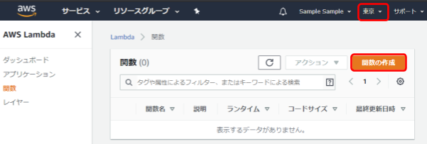
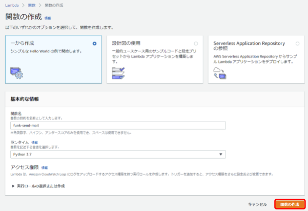
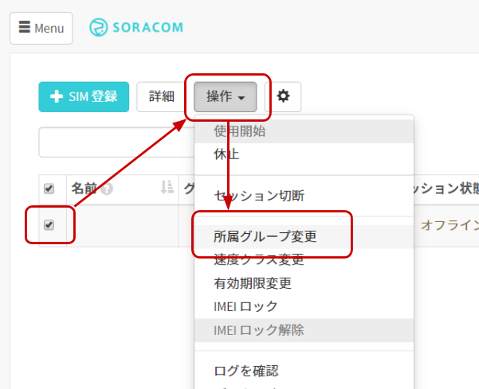

IoT レシピで紹介した Hosted Funk を自分で実装する手順です。AWS Lambda, Amazon SES を利用します。
システムの構成
以下のような構成となります。
SAM ユーザーの作成
AWS Lambda から SIM 情報を取得するためには、Lambda に SORACOM API の実行権限が必要です。SIM 情報を取得するための権限を持った SAM (SORACOM Access Management) ユーザーを作成します。
SORACOM ユーザコンソールにログインし、右上のメールアドレスのドロップダウンより [セキュリティ] をクリックします。
[ユーザー作成] をクリックします。
名前と概要を入力して [作成] をクリックします。
作成したユーザー名をクリックして編集します。
「権限設定」タブにて以下のパーミッション構文を貼り付け、[保存] をクリックします。
パーミッション構文の詳細はアクセス権限設定のためのパーミッション構文を参照してください。今回は SIM に関する情報と SIM が所属するグループの情報のみを取得できる権限を割り当てます。
{
"statements": [
{
"api": [
"Subscriber:getSubscriber",
"Group:getGroup"
],
"effect": "allow"
}
]
}SAM 認証キーの作成
「認証設定」タブで [認証キーを生成] をクリックします。

作成された認証キー ID 、認証キーシークレットを控えておきます。
[クリップボードにコピー] をクリックしてメモ帳などにコピーしておくと良いでしょう。
ここでコピーした認証情報は後の AWS Lambda 設定で使用します。
Amazon SES (Amazon Simple Email Service) をセットアップします。Amazon SES についての詳細は AWS 公式ドキュメントを参照してください。
メールアドレスを登録する
AWS マネジメントコンソールのリージョンが オレゴン (us-west-2) になっている事を確認します。
なっていなければ オレゴン に切り替えてください。現時点において東京リージョンでは Amazon SES を利用できないためです。
Amazon SES (Simple Email Service) のコンソールを開きます。
[サービス] をクリックした後、検索窓に ses と入れるか、 "カスタマーエンゲージメント" カテゴリの中の Simple Email Service をクリックしてください。
[Email Addresses] をクリックした後、[Verify a New Email Address] をクリックします。
フォームの "Email Address:" にLTE-M Button を押した際に送信される先の Email アドレスを入力して、 [Verify This Email Address] をクリックします。
その次に表示されたダイアログは [Close] をクリックします。
直後の状態は以下の通りです。
pending verification と表示されている事を確認してください。
メールソフトを開き、下記のようなメールが届いている事を確認したら、メール本文内の URL をクリックしてください。
クリックすると「検証に成功しました」というページが表示されます。
また、クリックした後は本メールは削除してしまって構いません。
Amazon SES コンソールに戻りリロードボタン で表示を更新した後に verified と表示されている事を確認してください。
で表示を更新した後に verified と表示されている事を確認してください。
SES からメールを送信するための IAM ポリシーを作成する
次のステップで設定する AWS Lambda が SES と連携できるよう、IAM ポリシーを作成します。
IAM ポリシーを作成する
IAM ユーザーには AWS 上のリソースに対する権限である IAM ポリシーを付与します。セキュリティリスクを極小化するために、SES を利用してメールを送信する権限だけを持つ IAM ポリシーを作成します。
AWS コンソールより Identity andAccess Management (IAM) メニューを開き、[ポリシー] をクリックします。
[ポリシーの作成] をクリックします。
新しくポリシーの作成画面が表示されるので、それぞれ設定していきます。まず、「サービスの選択」では今回連携したい SES を選択します。 次の「アクション」では、検索ウィンドウに sendEmailと入力してそれを選択します。最後の「リソース」では、「すべてのリソース」を選択します。
以上の設定が終わったら、[ポリシーの確認] ボタンをクリックします。
ポリシー名 (例 : funk-sendEmail) を指定して [ポリシーの作成] をクリックします。
AWS Lambda 関数を作成する
まずリージョンをアジアパシフィック (東京) に変更します。次に、AWS マネジメントコンソールのサービス一覧より Lambda を選択し、[関数の作成] をクリックします。

関数名やランタイムを指定して [関数の作成] をクリックします。
項目 | 例 | 備考 |
関数作成のオプション |
| - |
関数名 |
| 自由に入力可能です。 |
ランタイム |
| Python 3 ランタイムを選択します。当レシピは 3.7 で検証しました。 |

IAM ロールを追加する
「アクセス権限」タブよりロール名をクリックします。
[ポリシーをアタッチします] をクリックします。
新しいタブが開くので、先ほど作成した SES からメールを送信するポリシー名で検索し、チェックボックスにチェックを入れて [ポリシーのアタッチ] をクリックします。
ポリシーがアタッチできていることを確認します。
Lambda レイヤーを設定する
SORACOM CLI は Lambda 上で簡単に利用できるよう Lambda Layer として提供されています。Lambda Layer についてはこちらを参照してください。
[設定] > [Layers] > [レイヤーの追加] をクリックします。
「レイヤーバージョン ARN を提供」を選択し ARN を入力して [追加] をクリックします。
項目 | 例 | 備考 |
レイヤーバージョン ARN |
|
|
レイヤーの設定を確認したら関数名をクリックし、設定画面に戻ります。
環境変数を設定する
固定で設定するパラメータについて環境変数に指定します。
環境変数 > [環境変数を管理] をクリックします
[環境変数の追加] をクリックして各キーと値を設定します。その後、[保存] をクリックします。
キー | 値 |
| 「SAM 認証キー作成」で作成した認証キー ID (key-id から始まる文字列) |
| 「SAM 認証キー作成」で作成した認証キーシークレット (secret から始まる文字列) |
| AWS SES に登録したアドレスのうち、送信元アドレスとして使用したいもの |
以下のようにキー・値が見られれば環境変数の設定は完了です。(以下の画像では一部値をマスクしています)
タイムアウトを設定する
SORACOM API の呼び出しに時間がかかるため、タイムアウトをデフォルトの 3 秒よりも長くします。
基本設定 > [編集] をクリックします
タイムアウトを 10 秒に設定し [保存] をクリックします。
関数のコードを設定する
関数コードにて、以下の内容で上書きします。
lambda_function.py の内容
import defaults
from botocore.exceptions import ClientError
import boto3
import json
import os
import subprocess
import re
import pprint
pp = pprint.PrettyPrinter(indent=4)
ses = boto3.client('ses', region_name='us-west-2')
source_email_address = os.getenv('SOURCE_MAIL_ADDRESS')
default_destination_email_address = source_email_address
def replacement(match, d):
for key in d:
if key == match.group(1):
return str(d[key])
return match.group()
def get_email_body(email_format, event, context, tags):
import time
from datetime import datetime, timedelta, timezone
JST = timezone(timedelta(hours=+9), 'JST')
UTC = timezone(timedelta(hours=0), 'UTC')
etc = {
'unixtime': time.time(),
'timestamp': datetime.now(JST).strftime('%Y/%m/%d %H:%M:%S'),
'timestampUtc': datetime.now(UTC).strftime('%Y/%m/%d %H:%M:%S'),
}
email_body = email_format
email_body = re.sub(r'{{event\.(\w+)}}',
lambda m: replacement(m, event), email_body)
email_body = re.sub(r'{{context\.(\w+)}}',
lambda m: replacement(m, context), email_body)
email_body = re.sub(r'{{context\.location\.(\w+)}}',
lambda m: replacement(m, context.get('location', {})), email_body)
email_body = re.sub(r'{{tags\.(\w+)}}',
lambda m: replacement(m, tags), email_body)
email_body = re.sub(r'{{etc\.(\w+)}}',
lambda m: replacement(m, etc), email_body)
return email_body
def lambda_handler(event, context):
print(json.dumps(event))
if event.get('batteryLevel'):
event['batteryLevelPercent'] = 100 * event.get('batteryLevel')
print(json.dumps(context.client_context.custom))
custom_context = context.client_context.custom
imsi = custom_context.get('imsi')
get_subscriber_cmd = 'soracom subscribers get --imsi ' + imsi + ' --auth-key-id ' + os.getenv('AUTH_KEY_ID') + ' --auth-key ' + os.getenv('AUTH_KEY')
subscriber = json.loads(subprocess.run(get_subscriber_cmd, shell=True, stdout=subprocess.PIPE).stdout.decode())
if not subscriber:
raise Exception(f'Could not find imsi: {imsi}') # it should not happen
print("subscriber is")
group_id = subscriber.get('groupId')
if not group_id:
raise Exception(f'Could not get groupId for imsi: {imsi}')
get_group_cmd = 'soracom groups get --group-id ' + group_id + ' --auth-key-id ' + os.getenv('AUTH_KEY_ID') + ' --auth-key ' + os.getenv('AUTH_KEY')
group = json.loads(subprocess.run(get_group_cmd, shell=True, stdout=subprocess.PIPE).stdout.decode())
if not group:
raise Exception(
f'Could not read group configuration for group: {group_id}')
email_format = group.get('configuration').get('SoracomAir', {}).get('userdata', '')
if email_format == '' or group.get('configuration').get('SoracomAir', {}).get('metadata', {}).get('enabled', False) == False:
email_format = defaults.email_format
email_to = subscriber.get('tags', {}).get('mail_to', default_destination_email_address)
email_body = get_email_body(email_format, event,
custom_context, subscriber.get('tags', {}))
email_subject = email_body.split('\n')[0]
emaiL_body = '\n'.join(email_body.split('\n')[1:])
body_type = 'Text'
if re.search(r'<.+>', email_body):
body_type = 'Html'
res = ses.send_email(
Source=source_email_address,
Destination={
'ToAddresses': [
email_to
]
},
Message={
'Subject': {
'Data': email_subject,
'Charset': 'UTF-8'
},
'Body': {
body_type: {
'Data': emaiL_body,
'Charset': 'UTF-8'
}
}
}
)
print(res)
return Trueまた、メール本文が設定されていないときにデフォルトのメッセージを送信するよう、defaults.py を作成し以下の内容を貼り付けます。
defaults.py の内容
email_format = '''データ送信通知
SIM {{tags.name}} からデータが送信されました
--
以下の情報はメールテンプレートで {{event.xxx}} {{context.xxx}} {{tags.xxx}} {{etc.xxx}} のように参照できます
event:
clickType: {{event.clickType}}
clickTypeName: "{{event.clickTypeName}}"
BatteryLevel: {{event.batteryLevel}}
BatteryLevelPercent: {{event.batteryLevelPercent}}
context:
imsi: {{context.imsi}}
imei: {{context.imei}}
operatorId: "{{context.operatorId}}"
location:
lat: {{context.location.lat}}
lon: {{context.location.lon}}
tags:
name: "{{tags.name}}"
mail_to: "{{tags.mail_to}}" (未設定の場合は空欄)
etc:
timestamp: "{{etc.timestamp}}" JST
timestampUtc: "{{etc.timestampUtc}}" UTC
unixtime: {{etc.unixtime}}
'''それぞれ貼り付けたら [保存] をクリックして Lambda の設定は完了です。
SORACOM Funk から AWS Lambda へ連携できるよう、ARN (Amazon Resource Name) をコピーし、控えておきます。
SORACOM Funk から AWS Lambda を呼び出すためには、IAM ユーザーの認証情報が必要となります。ここでは IAM ユーザーを作成し、認証情報を取得します。
IAM ポリシーを作成する
IAM ユーザーには AWS 上のリソースに対する権限である IAM ポリシーを付与します。セキュリティリスクを極小化するために、先ほど作成した Lambda を実行する権限だけを持つ IAM ポリシーを作成します。
AWS コンソールより Identity andAccess Management (IAM) メニューを開き、[ポリシー] をクリックします。

[ポリシーの作成] をクリックします。

新しくポリシーの作成画面が表示されるので、それぞれ設定していきます。まず、「サービスの選択」では今回連携したい Lambda を選択します。 次の「アクション」では、検索ウィンドウに InvokeFunction と入力してそれを選択します。 3つ目の「リソース」では、[ARN の追加] をクリックして ARN の指定で先ほどコピーした ARN を貼り付けます。
以上の設定が終わったら、[ポリシーの確認] ボタンをクリックします。

ポリシー名 (例 : funk-send-mail-policy)を指定して [ポリシーの作成] をクリックします。
IAM ユーザーを作成する
AWS コンソールより Identity andAccess Management (IAM) メニューを開き、[ユーザー] をクリックします。
[ユーザーを追加] をクリックします。

任意のユーザー名を設定しアクセスの種類にて [プログラムによるアクセス] にチェックを入れ、[次のステップ : アクセス権限] をクリックします。

アクセス許可の設定では、既存のポリシーを直接アタッチを選択したあと、先ほど作成したポリシー名で検索します。ポリシーをチェックして、[次のステップ : タグ] をクリックします。

タグは特に不要なので何も入力せず [次のステップ : 確認] をクリックします。
以下の項目を確認して [ユーザーを作成] をクリックします。
確認項目 | 値 |
AWS アクセスの種類 | プログラムによるアクセス - アクセスキーを使用 |
管理ポリシー | 作成した管理ポリシー |
IAM 認証情報をコピーする
IAM ユーザーが作成されると、認証情報が発行されます。アクセスキー ID やシークレットアクセスキーを控えておきます。これらは再発行できないので、[.csv のダウンロード] をクリックして csv ファイル形式でダウンロードしておくと良いでしょう。
SORACOM Funk から AWS Lambda を呼び出すための設定をおこなっていきます。
作成したIAMユーザ情報をソラコムの認証情報ストアへ登録する
ユーザーコンソールの右上にあるユーザー名をクリックし ［セキュリティ］をクリックします。
［認証情報ストア］> ［認証情報を登録］をクリックします。

下記の情報を認証情報として登録します。
項目 | 例 | 備考 |
認証情報 ID |
| 自由に入力可能です |
概要 |
| 自由に入力可能です |
種別 |
| - |
AWS Access Key ID |
| - |
AWS Secret Access Key |
| - |
SORACOM Funk の設定をする
SIM 管理画面にて Funk を設定したい SIM にチェックを付け、［操作］>［所属グループ変更］とクリックします。

「新しい所属グループ」のプルダウンボックスをクリックした後、［新しいグループを作成...］をクリックします。
「グループ作成」のグループ名を入力して［グループ作成］をクリックします。
項目 | 例 | 備考 |
グループ名 |
| 自由に入力可能です。日本語も設定可能です。 |
新しい所属グループが先ほど作成したグループになっていることを確認したら［グループ変更］をクリックします。
自動的に SIM 管理画面に戻ります。
SIM の「グループ」に先ほど作ったグループが設定されていることを確認してください。
グループ名をクリックして、Funk を設定します。
[基本設定］ >［SORACOM Funk 設定］をクリックして設定ができるように開き情報を設定します。
項目 | 例 | 備考 |
（スイッチ） | ON | - |
サービス |
| - |
送信データ形式 |
| - |
認証情報 |
| 認証情報ストアに登録した認証情報を指定してください。 |
関数の ARN |
| 作成した Lambda ファンクションの ARN を指定してください。 |
これで SIM からデータが送信された際にメールが送信されるようになりました。SORACOM LTE-M Button for Enterprise を利用する場合は、別途 SORACOM Air for Cellular 設定よりバイナリパーサーを設定するのを忘れないようにしてください。
メールの宛先を変更するには
オペレータのメールアドレス以外のメールアドレスに送信したい場合には、以下の方法で送信先メールアドレスを変更できます。初期設定においては SES の Email Address に表示されているメールアドレスへのみメールが送信できますので注意してください。
［Menu］>［SIM 管理］とクリックして SIM 管理画面を開きます。
対象の SIM を選択し、[ 詳細 ] を押して詳細画面を開きます。
[タグ] を選択し、[ ＋ ] を押します。
「タグの編集」で以下のように設定します。
項目 | 設定値 | 備考 |
名前 | mail_to | |
値 | (送信先メールアドレス) | 間違えないように気を付けてください |
最後に保存を押します。これで送信先メールアドレスの変更が出来ました。
メールの件名や本文を変更するには
メールの件名や本文をカスタマイズするには、メタデータサービスのユーザデータを使います。
SIM 管理画面から、SORACOM LTE-M Button に割り当てたグループ名をクリックします。
［SORACOM Air for Cellular 設定］をクリックして設定ができるように開きます。

「メタデータサービス設定」で以下のように設定します。
項目 | 設定値 | 備考 |
(スイッチ) | ON | スイッチはクリックすることで OFF から ON に切り替えることができます。 |
ユーザーデータ | 任意の文章 | フォーマットについては下記参照 |
[ 保存 ] ボタンを押すのを忘れないようにしましょう。
ユーザーデータのフォーマット
ユーザーデータの１行目は件名として使われ、２行目以降が本文となります。
また、HTMLタグを入れると自動的に HTML メールとなります。
本文中に {{event.clickTypeName}} などと書く事によって、メールの中に様々な情報を差し込むことが出来ます。利用可能なパラメータは、ユーザーデータ未設定時やメタデータのスイッチが OFF の場合に送信されるデフォルトのメールに記載があります。
メール本文の設定例
SORACOM LTE-M Button for Enterprice から位置情報を送信する場合
簡易位置情報機能を有効にするようにしてください。
迎えにきて！
<h1>ボタン {{tags.name}} が {{event.clickTypeName}} クリックされました</h1>
<ul>
<li>バッテリー残量: {{event.batteryLevelPercent}} %
<li><a href=
https://www.google.com/maps?q={{context.location.lat}},{{context.location.lon}}>位置情報</a>
<li>時刻: {{etc.timestamp}}
</ul>